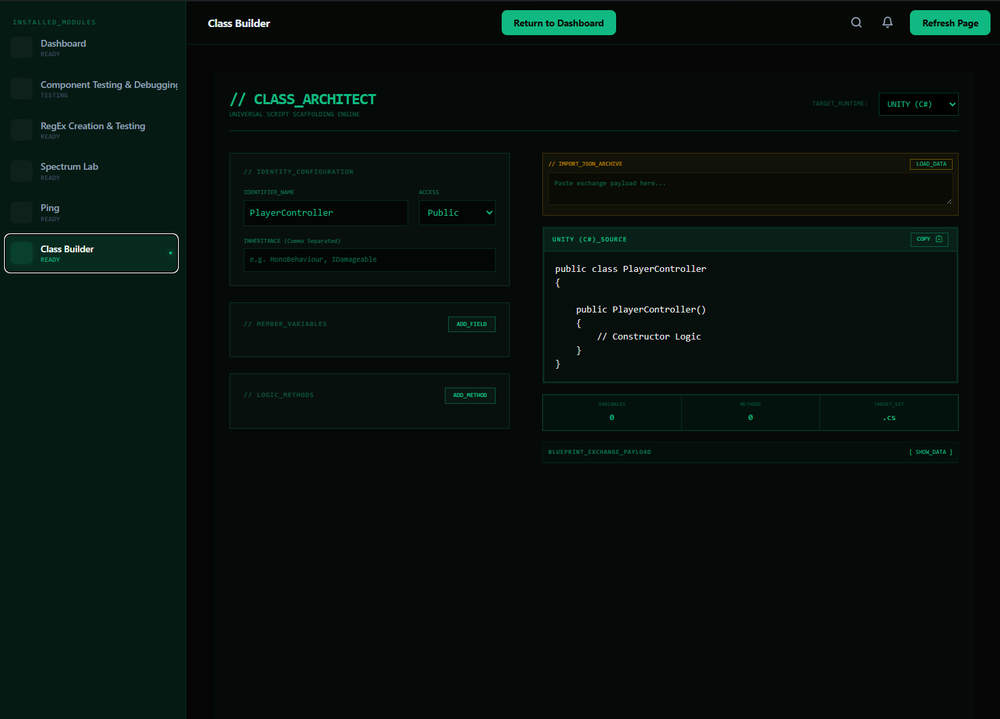
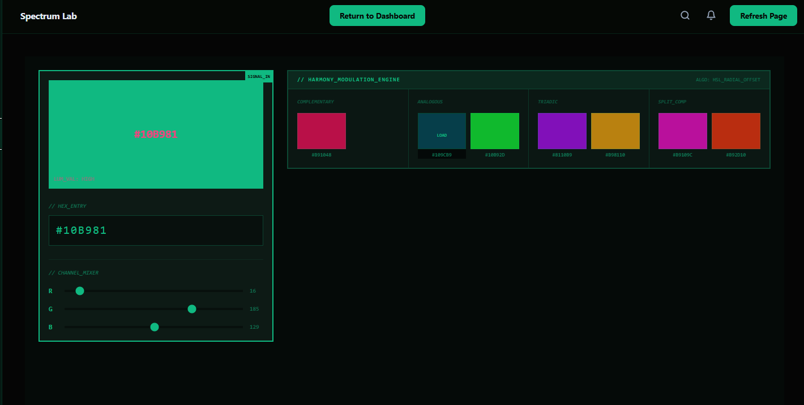
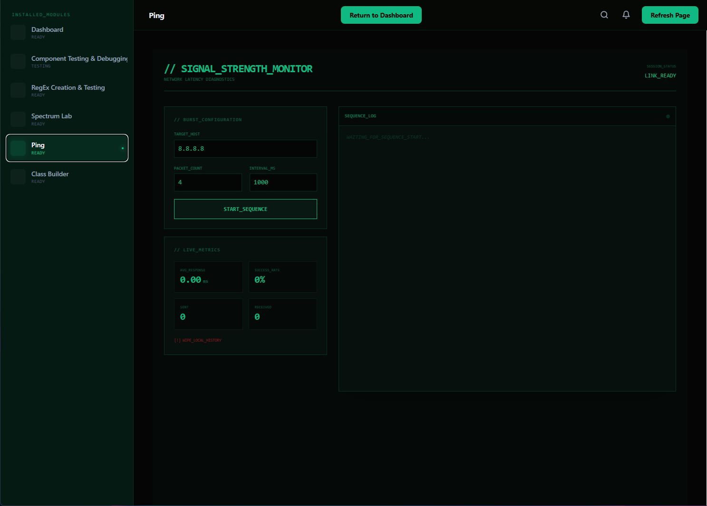

Game Dev Suite Desktop Application
A cross-platform desktop application built with Blazor and Photino, providing a lightweight, centralized suite of development tools and automation utilities for game developers.
Project Overview & Features
- The Problem (Why): Built to eliminate fragmentation by consolidating scattered game development utilities, project trackers, and asset pipelines into a single workspace.
- The Tech Stack (What it Used): Leverages a Blazor Hybrid architecture paired with Photino, enabling a modern web-style frontend powered by a high-performance native C# backend.
- Core Capabilities (What it Did): Streamlines repetitive daily workflows, automates local pipeline configurations, and handles rapid code template generation for faster prototyping.
- Performance & Workflow (Why): Chosen to deliver a native desktop experience with a fraction of Electron's memory overhead, while allowing full use of familiar HTML/CSS layout building blocks entirely within C#.
Skills & Technologies Applied
Workflow & Tools
Core Modules & Implementation
The GameDev Suite is broken down into dedicated, modular tabs designed to solve specific friction points in the development pipeline.
Dynamic Class Generation Tool
Accelerates rapid prototyping by automatically generating boilerplate script architectures for the top three major game engines. By feeding structural patterns into an engine-agnostic engine, it outputs syntactically correct classes, fields, and methods instantly.
This Tool was by far the most complicated to implement due to the complexity and format of the various languages, various syntaxes, while being able to easily convert between the set built in formats, or user made ones imported into the json config. The code snippet below goes more in depth on how this generates actual code dynamically, but to summarize: I defined patterns for each main component of a class as well as formatting for common methods and layouts, and then gave the user the ability to modify things like access modifiers, method names, parameter names and types, and field types while then automatically generating the class, constructors, and other necessary components.

A final word about this tool is that I allowed the user to add their own language patterns to branch into new languages, as well as copy, paste, andedit the underlying json structure for how a class is generated, which allows users to share generated templates, and then another user can insert it and convert it to whatever language they need.

Spectrum Lab
A dedicated visual utility for designers and developers to manage color spaces. It features instant Color-to-Hex conversions and a dynamic palette generator, ensuring visual assets maintain color consistency across engine UI systems and shaders.
I plan to do more work on this tool to add additional color space conversions and improve the palette generation algorithm, as well as enhance the user interface to full the void space it currently has. This module required me to pull from the system.drawing namespace to create various approximation methods to convert between different color spaces such as RGB, HSL, and HSV.
Network Diagnostics (Ping Tab)
Integrates low-level local networking diagnostics directly into the desktop workspace. Built to run alongside multiplayer game instances, it allows real-time packet round-trip testing and connection quality checks without forcing the developer to rely on external command-line terminals.
Designing this simple but useful tool allowed me to provide an easier way for developers to monitor and debug their network connections, and I am personally proud that I was able to write all the code for this module with no AI whatsoever!

Under the Hood: Template Code Generation
Below is the core architectural logic driving the language-agnostic layout compilation engine. It dynamically parses language criteria to build clean constructors, variables, and inheritance trees:
Designing this system required me to break down what I am aware of structure wise to the dgeneral layout of most game development scripts into blocks of pieces that the average user would need. Using Serializers and Reflection, I was able to create a flexible system that can adapt to different programming languages and frameworks, and can even expand into new formats or can be adjusted via the internal JSON configuration.
public static string GenerateClass(ClassPattern cPattern)
{
LanguageDefinition lang = cPattern.Definition;
if (lang == null) return "// ERROR: NO_LANGUAGE_DEFINITION";
StringBuilder sb = new StringBuilder();
string inheritance = cPattern.Inheritables != null && cPattern.Inheritables.Count != 0
? $" : {string.Join(", ", cPattern.Inheritables)}"
: "";
foreach (VariablePattern v in cPattern.Variables) v.Definition = lang;
foreach (MethodPattern m in cPattern.Methods) m.Definition = lang;
string classHeader = lang.Boilerplate.ClassDeclaration
.Replace("{Modifier}", lang.AccessModifiers[cPattern.Modifier])
.Replace("{Name}", cPattern.Name.ToPascalCase())
.Replace("{Inheritance}", inheritance)
.TrimEnd(' ', ':');
sb.AppendLine(classHeader);
sb.AppendLine("{");
foreach (VariablePattern v in cPattern.Variables)
{
v.Definition ??= lang;
sb.AppendLine($" {GenerateVariable(v)}");
}
sb.AppendLine();
if (!string.IsNullOrEmpty(lang.Boilerplate.ClassConstructorPattern))
{
string constructor = lang.Boilerplate.ClassConstructorPattern
.Replace("{Modifier}", lang.AccessModifiers[AccessModifier.Public])
.Replace("{Name}", cPattern.Name.ToPascalCase())
.Replace("{Params}", "")
.Replace("{Body}", "// Constructor Logic");
sb.AppendLine(Indent(constructor));
}
foreach (MethodPattern m in cPattern.Methods)
{
m.Definition ??= lang;
sb.AppendLine(Indent(GenerateMethod(m)));
}
sb.AppendLine("}");
return sb.ToString();
}Project is private on Github at this time!